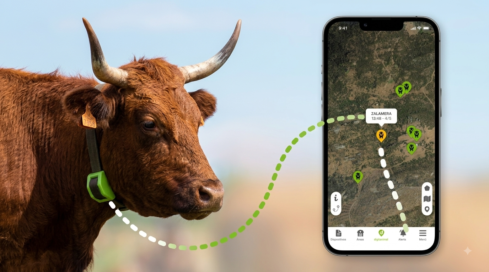
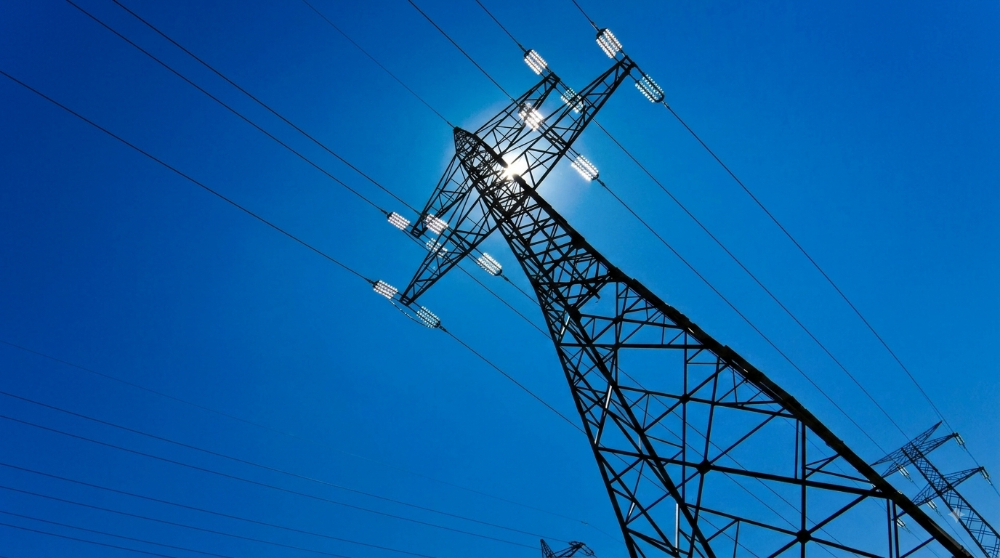
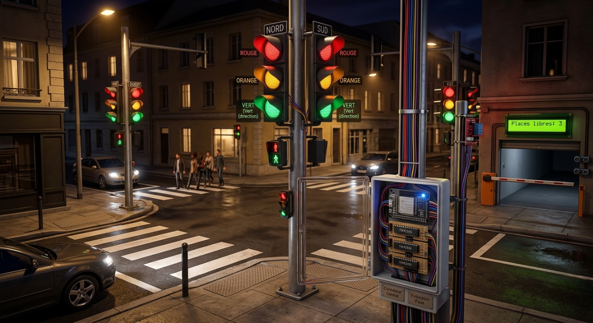

Transition éducative digitale
Transformer l'enseignement vers un modèle numérique innovant, soutenu par un accompagnement intelligent par IA.
Voir sur GitHubMaster 2 IA, parcours Objets Connectés & Cybersécurité (OCC) — ENI, Université de Fianarantsoa
Je conçois des solutions numériques intelligentes et sécurisées qui répondent à des besoins concrets : eau, énergie, sécurité, éducation et gestion urbaine.
Reconnaissance faciale (OpenCV), analyse de données (KNIME), assistants éducatifs et optimisation par IA.
Automatisation de processus, d'audits de sécurité et de systèmes physiques (pompage, énergie, paiement).
ESP32, Arduino, MQTT/HTTP/RTSP, GPS, applications web et mobiles connectées aux capteurs.
Évaluation des risques, vulnérabilités, sécurité Wi-Fi et réseau, sécurité IoT, audit et rapports.
Linux (Kali/Ubuntu), Windows Server, virtualisation, Docker/Kubernetes et pipelines CI/CD.
Transformer l'enseignement vers un modèle numérique innovant, soutenu par un accompagnement intelligent par IA.
Voir sur GitHub
Optimisation de la collecte urbaine grâce à l'IoT et l'IA, pour réduire les coûts.
Voir sur GitHub
Évaluation des risques, gestion de vulnérabilités, sécurité réseau Wi-Fi, audit et rapports.
Voir sur GitHubCaméras Hikvision, backend FastAPI, base de données MongoDB, stockage cloud Cloudinary.
Voir sur GitHubInterfaces web, mobile et logiciel de bureau pour la gestion du pompage.
Voir sur GitHub




IoT, ESP32, automatisation.
Voir sur GitHubSystème IoT de pompe solaire pour l'accès à l'eau potable.
Association des étudiants AENS2A, Université de Fianarantsoa.
Formation sur l'énergie photovoltaïque.
Dépannage, installation et configuration de systèmes Linux et Windows.
École Nationale d'Informatique (ENI), Université de Fianarantsoa.
ONG IDEA Academy & ENI.
Électronique Appliquée & Informatique Industrielle, Faculté des Sciences, Université de Fianarantsoa.
Je recherche un stage de fin d'études ou un premier poste en IA, IoT, automatisation ou cybersécurité. Écrivez-moi !
tianafanantenanal@gmail.com
+261 34 64 888 85
github.com/fanantenana1
Madagascar